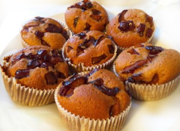

Slivovi mafini

- Sestavine za 6 oseb:
-
- 275g moke
- 1,5 žličke pecilnega praška
- 0,5 žličke sode bikarbone
- 2 jajci
- 100g sladkorja
- 100ml olja
- 250ml jogurta
- 350g sliv
- Postopek:
-
- Pečico segrejemo na 180°C
- V skledi zmešamo suhe sestavine: moko, pecilni prašek in sodo bikarbono. Na sredini naredimo jamico. Slive operemo, razpolovimo in izkoščičimo. Polovičke zrežemo na manjše koščke.
- V skledi z ročno metlico rahlo razžvrkljamo jajci. Dodamo jogurt, sladkor in olje. Vse skupaj dobro premeš amo in vlijemo v jamico, ki smo jo naredili v skledi s suhimi sestavinami. S kuhalnšco ali žlico na hitro premešamo, da se vse sestavine dobro navlažijo in sprimejo skupaj. Nato dodamo koščke sliv in vse skupaj še enkrat hitro in previdno premešamo. Testo ne sme biti povsem gladko, temveč še malo kepasto.
- S testom do treh četrtin napolnimo vdolbinice pekača za mafine. Pečemo v ogreti pečici približno 20 minut oziroma toliko časa, da se testo po vrhu zlato rjavo zapeče.
- Pečene mafine najprej 5 minut hladimo v pekaču, nato jih odstranimo iz pekača in ohladimo na reš etki. Ponudimo tople ali hladne.
- Opombe:
- Recept lahko izboljšaš tako, da dodaš rozine.